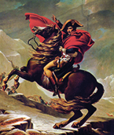
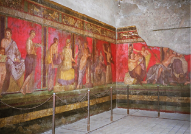
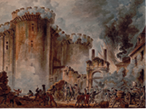
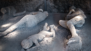
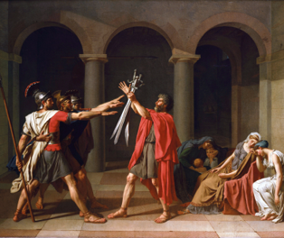
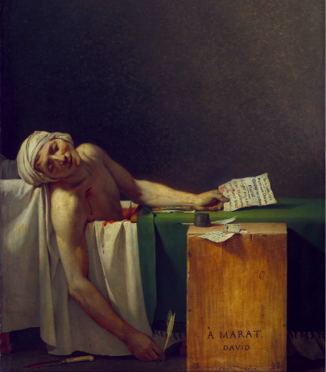
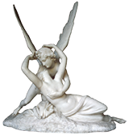
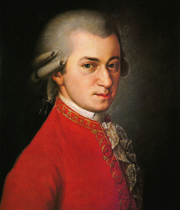
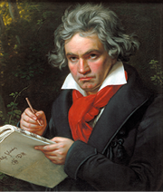

Lemonnier, Anicet-Charles. No salão de leitura de madame Geoffrin, 1812. Óleo sobre tela, 129,5 cm x 196 cm. Museu do Palácio de Malmaison, Malmaison, França.
Léna (CC BY 3.0)/Wikimedia/Museu do Palácio de Malmaison, Malmaison.
A partir do século XVIII, surge um movimento cultural e artístico que retoma a Antiguidade Clássica, especialmente a arte greco-romana, e os ideais iluministas. Conhecido como Neoclassicismo, nasceu na Europa e se espalhou para outras partes do mundo até meados do século XIX. Diferentemente do Barroco e do Rococó, a arte neoclássica opõe-se aos exageros, aos rebuscamentos e às curvas e se distingue pela moderação, pelo equilíbrio, pela liberdade dos excessos de detalhes – típicos dos dois estilos artísticos anteriores – e, principalmente, pela valorização dos retratos épicos e dos temas mitológicos.
Neste capítulo são examinados os elementos das Artes Visuais e da música nos séculos XVIII e XIX, bem como o contexto sociocultural em que se desenvolveram.
Neste capítulo serão abordadas as habilidades EM13LGG601, EM13LGG602, EM13LGG603 e EM13LGG604.
A atriz Audrey Hepburn em uma cena do filme Bonequinha de luxo (1961), dirigido por Blake Edwards.
Paramount/Kobal/Shutterstock
O maestro João Carlos Martins regendo a Orquestra Bachiana Filarmônica no Avery Fisher Hall, Nova York, em 19 de setembro de 2010.
Hiroyuki Ito/Getty Images
A supremacia da técnica
Na atualidade, denominamos de “ clássicos ” as obras artísticas, os objetos, as roupas, entre outros elementos, que servem de modelo e referencial, independentemente de época, e conseguem transpor diferentes culturas.
No final do século XVIII e no início do século XIX, na Europa, desenvolveu-se um movimento artístico e cultural que retomou os valores da Antiguidade Clássica e foi chamado de Neoclassicismo . É também conhecido como Academicismo por ter sido amplamente ensinado nas academias de belas-artes mantidas pelos governos europeus. No senso comum, as manifestações artísticas acadêmicas são conhecidas como obras de arte clássicas.
No início do Neoclassicismo, nas primeiras décadas do século XVIII, os valores da cultura greco-romana voltaram a ser referência não só para o modo de vida como também para os padrões estéticos. Naquela época, os excessos artísticos do Barroco e do Rococó eram considerados até mesmo falta de decoro em relação à situação política e econômica que marcava a Europa. Dessa forma, a valorização de um estilo mais simples e modesto que se opusesse ao exagero do Barroco e à futilidade do Rococó, com sobriedade nas formas e voltado ao racional e ao necessário, passou a ser considerado adequado ao momento. Nesse sentido, a arte antiga atendia ao que se esperava, uma vez que era tida como modelo de equilíbrio , clareza e proporção.
As pinturas produzidas no estilo neoclássico são marcadas pela moderação, pela redução de ornamentos típicos do Rococó, com um colorido mais contido e, em especial, por uma exatidão nos contornos. As temáticas valorizavam o patrimônio histórico nacional e o registro de acontecimentos considerados importantes naquele século. Na época, líderes como Napoleão Bonaparte (1769-1821) encomendaram diversas obras para valorizar a história nacional e seus grandes feitos, retratando-os de maneira glamorosa. A recuperação do espírito heroico pode ser vista na obra Napoleão cruzando os Alpes , de Jacques-Louis David.
DAVID, Jacques-Louis. Napoleão cruzando os Alpes, c. 1801. Óleo sobre tela, 271 cm x 232 cm. Palácio de Charlottenburg, Berlim, Alemanha. O pintor idealiza a beleza do cavalo e do imperador Bonaparte, imprimindo um aspecto de coragem e heroísmo à obra.
Palácio de Charlottenburg, Berlin
A rigidez formal e o academicismo que marcaram as obras neoclássicas levaram críticos como Adolfo Venturi (1856-1941), em 1896, a rejeitar esse estilo e a considerá-lo caricatural.
No final do século XVIII, a Arqueologia ganhou destaque na Europa, em especial com as descobertas das cidades de Pompeia e Herculano, que estavam desaparecidas sob as cinzas da erupção do Vesúvio (79 d.C.). Os avanços das descobertas arqueológicas nas duas cidades revelaram uma arte antiga bem preservada. Junto às reedições de obras de viajantes, que relatavam cenas, costumes e expressões artísticas produzidas em Roma e na Grécia durante a Antiguidade, as obras descobertas em Pompeia e Herculano serviram de inspiração aos artistas do século XVIII.
Afresco encontrado em Pompeia, Itália, nas escavações arqueológicas durante o século XVIII.
crystaltmc/iStockphoto.com
... a Revolução Francesa, ocorrida de 1789 a 1799, teve como marco inicial a tomada da Bastilha e como encerramento a chegada de Napoleão Bonaparte ao poder, apoiado pela burguesia, que, após conquistar seus objetivos, desejava restaurar a ordem.
Ao longo do século XVIII, as estruturas do Antigo Regime ruíram e, em seu lugar, surgiu uma sociedade burguesa, a qual uniu o poder econômico ao político e procurou se “enobrecer”. Ao contrário do povo francês, que lutou pela queda da monarquia, a burguesia procurou copiar os hábitos da aristocracia e se afastar das classes menos favorecidas. Para evitar a continuidade dos embates violentos, a classe burguesa apoiou Napoleão Bonaparte.
HOUËL, Jean-Pierre-Louis-Laurent. Tomada da Bastilha , 1789. Aquarela, 37,8 cm x 50,5 cm. Biblioteca Nacional da França, Paris.
Biblioteca Nacional da França, ParisPompeia foi redescoberta acidentalmente durante a escavação de um canal de água. Acredita-se que, após a erupção do Vesúvio, em agosto do ano 79, toda a cidade de Pompeia, na baía de Nápoles, Itália, foi coberta por gás vulcânico e cinzas. Até meados do século XVIII, não se tinha notícia da cidade. Quando descoberto, o sítio arqueológico revelou dados detalhados e em excelente estado de conservação, como pinturas e inscrições em paredes, objetos, construções e, até mesmo, corpos de vítimas petrificados. Pompeia é considerada o maior sítio arqueológico da atualidade e um dos mais conhecidos do mundo. Tornou-se ponto turístico e é visitado por milhares de pessoas até hoje.
Vítimas do Vesúvio cobertas de cinzas, em Pompeia, Itália.
sestovic/iStockphoto.comA outra Pompeia: vida e morte em Herculano.
Série da BCC, com professor Andrew Wallace-Hadrill, História da Antiguidade Ocidenta – UFSC.
O documentário apresenta a vida na cidade de Herculano, na Itália, momentos antes de ser destruída pela erupção do Vesúvio.
Disponível em: http://p.p4ed.com/STPUS.
Pintura neoclássica
A pintura neoclássica inspirou-se na escultura clássica grega e na pintura renascentista italiana, em especial nas obras de Rafel Sanzio (1483-1520), artista exímio no uso do equilíbrio na composição. O racionalismo dominante refletia-se no formalismo da composição, na sobriedade dos ornamentos e no uso das cores. Os contornos passaram a ser exatos, com pinceladas que não marcavam a superfície, imprimindo um aspecto impessoal na obra, com o predomínio do desenho sobre a cor.
Os principais representantes da pintura neoclássica são Jean Ingres (1780-1867) e Jacques-Louis David (1748-1825).
Jean Auguste Dominique Ingres dedicou-se a pintar retratos e, principalmente, a figura feminina. Em uma de suas mais reconhecidas obras, ele retrata com serenidade e clássica beleza o nu humano, suavizado pela luz refletida no corpo da mulher com delicadeza. Suas obras são consideradas um valioso testemunho dos costumes e do espírito da burguesia, a que ele também pertencia.
Jacques-Louis David foi considerado o maior representante da pintura neoclássica francesa. Sua obra O juramento dos Horácios (1784) marca o fim do estilo Rococó, representado por Jean-Honoré Fragonard (1732-1806), e a ascensão da estética neoclássica. A pintura retrata um tema da Roma Antiga de maneira sóbria, heroica e viril. De acordo com o historiador Tito Lívio (59 a.C.-17 d.C.), os três irmãos Horácios foram escolhidos pelo governo de Roma para desafiar os Curiácios, os campeões. A imagem pode ser dividida verticalmente em três partes iguais, pelos arcos em segundo plano. Na primeira parte, os três irmãos atendem ao pedido de defender Roma e realizam o juramento de vencer ou morrer, ato que representa o heroísmo. Na segunda, o pai fornece as espadas aos filhos para que cumpram seu dever, o que representa o estoicismo , ou seja, a firmeza em cumprir com as obrigações. Na terceira, a expressão das mulheres e das crianças indicam a desgraça que se aproxima e representam o sentimento diante do heroísmo e do estoicismo.
DAVID, Jacques-Louis. O juramento dos Horácios , 1784. Óleo sobre tela, 330 cm x 425 cm. Museu do Louvre, Paris.
Gianni Dagli Orti/Shutterstock/Museu do Louvre, Paris
Por dentro da arte
A obra A morte de Marat (1793), de Jaques-Louis David, é uma de suas pinturas mais conhecidas. Retrata o assassinato de um dos chefes políticos da Revolução Francesa e denuncia as divergências e os conflitos internos que rodearam o processo revolucionário, os quais só foram solucionados com a ascensão de Napoleão Bonaparte.
David era amigo de Jean-Paul Marat, portanto retratá-lo em sua morte teve uma dimensão não apenas política para o pintor. A obra foi concebida como um monumento para um homem que foi herói, mártir e amigo.
Marat tinha uma doença de pele dolorosa, que o obrigava a permanecer dentro de uma banheira grande parte do dia, por isso montou uma em seu gabinete de trabalho. Sabendo disso, a jovem francesa Marie Anne Charlotte Corday (1768-1793) pediu uma audiência com Marat a pretexto de lhe entregar uma lista de nomes daqueles que discordavam da Revolução; ela, então, a sós com ele, assassinou-o com uma facada no peito.
Embora dominada por uma forte emotividade, a pintura apresenta aspectos documentais como testemunho e descrição da ação. Todos os objetos presentes na cena têm uma função concreta, não há detalhes que prejudiquem a clareza da mensagem. Dessa forma, a composição é encenada com todos os sinais e pistas para a identificação e compreensão do acontecimento: a banheira, a faca, a carta, a ferida e o sangue.
A cena, dominada por um fundo escuro e liso, destaca a imagem de Marat, iluminado e estático. Os tons frios realçam alguns pormenores do corpo desfalecido com algumas manchas avermelhadas. Há apenas algumas gotas de sangue nos tecidos que o envolvem. O pintor preferiu concentrar a atenção do observador no mártir, não na morte em si. A pele de Marat, que tinha muitas deformações em decorrência da doença, foi representada lisa; a face apresenta feições joviais e expressão serena. Para enfatizar que Marat era um “homem do povo”, David pintou um caixote velho como uma escrivaninha improvisada e, nela, assinou a dedicatória “À Marat, David”, como se fosse uma lápide. A faca, deixada no chão, apresenta o mesmo tamanho que a pena utilizada por Marat. Simbolicamente, enquanto Corday utilizava a faca, Marat lutava com ideias. O sentido moral e didático da obra anuncia o caráter propagandístico dos trabalhos posteriores de David.
DAVID, Jacques-Louis. A morte de Marat , 1793. Óleo sobre tela, 128 cm x 165 cm. Museu Real de Belas-Artes da Bélgica, Bruxelas.
Museu Real de Belas Artes da Bélgica, Bruxelas
Escultura e arquitetura neoclássicas
A escultura neoclássica foi marcada por temas épicos e mitológicos e pelas grandes proporções. O material mais utilizado foi o mármore, esculpido com harmonia e simetria, gerando o equilíbrio das formas.
Se na pintura Paris era o centro irradiador do Neoclassicismo, Roma toma seu lugar na escultura, com destaque para o escultor italiano Antônio Canova (1757-1822). Em sua obra Amor e Psique (1794-1799), Psique, adormecida em um sono mortal, é despertada por um beijo de amor de Eros e levada ao Olimpo, morada dos deuses gregos.
CANOVA, Antônio. Amor e Psique , 1794-1799. Escultura, mármore, 148 cm x 172 cm. Museu Nacional do Hermitage, São Petersburgo, Rússia.
European Fine Art/The State Hermitage Museum, Saint Petersburg
A escultura destacou-se por exprimir graça, sensualidade e delicadeza, reforçando o tom poético do mito. Além disso, o entrelaçamento indica o desabrochar amoroso e o encontro com o divino.
A arquitetura neoclássica foi fortemente marcada pela inspiração clássica e pelas construções renascentistas. Um dos maiores exemplos é o Panteão de Paris, na França – construído entre 1764 e 1790 –, que traz elementos da arquitetura gótica com a exuberância da arquitetura grega. Outro exemplo é o Portão de Brandemburgo, em Berlim, na Alemanha, que revela a forte presença do estilo em outros países europeus.
Muitas das edificações dos séculos XVIII e XIX em estilo neoclássico foram inspiradas nas obras do arquiteto italiano Andrea Palladio (1508-1580), que projetou vilas e construções marcadas pela solidez, pela praticidade e pelos elementos da Antiguidade Clássica – um exemplo é seu projeto Vila Capra, também conhecida como La Rotonda, que chama a atenção por sua modulação, proporção e incrível simetria. Alguns desses elementos são as colunatas e as arquitraves gregas, os edifícios em forma de cubos perfeitos e os pórticos gregos. Essas construções transmitem a ideia de simplicidade e clareza.
Panteão de Paris, França.
Moonik (CC BY-SA 3.0)/Wikimedia Commons
Vila Capra, em Vicenza, Itália.
Flavio Vallenari/iStockphoto.com
Portão de Brandemburgo, Berlim, Alemanha.
Renata Sedmakova/Shutterstock.com
Música clássica
A partir do século XVIII, diversos compositores começaram a pensar um novo estilo musical, agradável aos sentidos e compreensível para o intelecto, alcançando o coração e a mente de todas as pessoas. Esse estilo ficou conhecido como Classicismo, e não Neoclassicismo, como na pintura. A música do século XVIII ficou conhecida por desenvolver um estilo clássico, relacionado à produção dos compositores da Escola de Viena, como Haydn, Mozart e Beethoven. Nesse sentido, a produção musical do século XVIII é conhecida por formatar e difundir o termo “ clássico ”, embora suas ligações com a Antiguidade Clássica sejam mais idealizadas do que concretas.
No contexto musical, o termo “ neoclassicismo ” refere-se às composições criadas no século XX que retomaram alguns elementos das poéticas do Classicismo do século XVIII. Portanto, respeitando a temporalidade própria da linguagem da música, o clássico musical é ao estilo equivalente ao neoclássico nas Artes Visuais.
A preocupação central desse estilo era a de que a música fosse verdadeira, bela e bem proporcionada, equilibrando ideia e sentimento, forma e conteúdo, como se imaginava que os antigos gregos já haviam feito com sua arte no passado. Essas composições musicais ficaram, então, conhecidas como pertencentes ao “estilo clássico”.
Para os compositores do Classicismo, especialmente Franz Joseph Haydn (1732-1809), Wolfgang Amadeus Mozart (1756-1791) e Ludwig van Beethoven (1770-1827), a música era uma forma de discurso, como se fosse uma linguagem falada.
Krafft, Barbara. Retrato póstumo de Wolfgang Amadeus Mozart , 1819. Óleo s/ tela. Sociedade de Amigos da Música em Viena, Áustria.
Otto Erich/Wikimedia/Sociedade de amigos da música em Viena
Stieler, Joseph Carl. Ludwig van Beethoven compondo sua ‘Missa Solemnis’ , 1820. Óleo s/ tela, 62 cm x 50 cm. Museu A Casa de Beethoven, em Bonn, Alemanha.
Denniss/Wikimedia/Beethoven-Haus, Bonn
Assim, deveria ser ordenada de maneira clara, de acordo com uma organização prévia, a fim de obter clareza e compreensão. Para esses compositores, a elaboração de obras de arte precisa de algum tipo de organização, ou seja, de uma forma. É ela que encadeia os elementos musicais para tornar a obra compreensível, prevendo a repetição e a variação das ideias: melodias, ritmos, entre outros.
Os compositores do Classicismo criavam composições completas com base em ideias aparentemente simples. Dessa maneira, o trabalho de composição partia da criação de pequenas unidades sonoras chamadas motivos . Com o desenvolvimento desses motivos, eram criadas as melodias, que se sucediam ao longo da composição. Além disso, os acompanhamentos eram responsáveis por completar e dar sentido às melodias, isto é, às sonoridades, que ficavam em segundo plano. Em geral, as melodias eram tocadas nas regiões mais agudas e os acompanhamentos com sonoridades eram tocados nas mais graves, embora o inverso também pudesse ocorrer.
Mãos à obra
Em grupo, escolham uma pintura no estilo neoclássico e montem a cena ou criem cenários e figurinos semelhantes aos da obra escolhida. Fotografem a cena, imprimam a foto em tamanho 15 cm × 21 cm e façam uma exposição das criações da turma.
1
Quais eram os ideais e os padrões estéticos do Neoclassicismo?
2
Unicanto-DF O Neoclassicismo foi um movimento artístico, surgido na Europa por volta de 1750, durando até meados do século XIX. Esse movimento teve como objetivo principal resgatar os valores estéticos e culturais das civilizações da Antiguidade Clássica (Grécia e Roma). A arte neoclássica era
- voltada para a religião.
- voltada para a população de classe baixa.
- uma arte acadêmica.
- uma arte que buscava a fuga das regras.
- uma maneira de enxergar o mundo.
3
UFSCar-SP Marat foi um importante personagem na Revolução Francesa (1789). Seu assassinato teve várias representações. Uma delas foi o quadro de David, A Morte de Marat , um símbolo do movimento revolucionário e de grande importância para a história da arte.
Museu Real de Belas Artes da Bélgica, Bruxelas
Em relação a essa obra, é correto afirmar que:
- David ressaltou características da história pessoal de Marat, ou seja, um revolucionário de origem humilde e camponesa.
- Marat foi retratado como um símbolo dos radicais girondinos, responsáveis pela expulsão dos montanheses da Convenção e execução de seus líderes.
- David inaugurou a pintura histórica, mítica e heroica, apresentando a eternidade do personagem.
- David retratou Marat de uma forma não épica, diferenciando sua obra do idealismo da arte acadêmica aristocrática.
- David transformou Marat em personagem das tragédias gregas e sua morte em um ato romântico da revolução.
4
Analise as afirmativas a seguir e, depois, assinale a alternativa correta.
- O Neoclassicismo inspirou-se na cultura clássica e se opôs aos excessos de detalhes produzidos pelo Barroco e pelo Rococó nas artes.
- O Neoclassicismo foi o primeiro movimento artístico que buscou como origem a cultura da Antiguidade Clássica.
- No Neoclassicismo, há a predominância de linhas retas sobre a curva e a composição é estática e austera.
- As afirmativas I e II estão corretas.
- As afirmativas I e III estão corretas.
- As afirmativas II e III estão corretas.
- Todas as afirmativas estão corretas.
- Todas as afirmativas estão incorretas.
5
UEM-PR 2016 Segundo Ian Chilvers (Dicionário Oxford de Arte. São Paulo: Martins Fontes, 2001, p. 374), o Neoclassicismo expressou “o desejo de recriar o espírito heróico, bem como os padrões decorativos da arte da Grécia e de Roma”. Ele afirmou também que os artistas neoclássicos, assim como seus contemporâneos, no século XVIII, os filósofos iluministas, possuíam um interesse “mais científico” pela Antiguidade Clássica. Levando em conta essas assertivas, e conhecimentos correlatos, assinale o que estiver correto .
01.
A arquitetura neoclássica teve como um de seus aspectos mais pronunciados a monumentalidade, além de uma forte preocupação com a simetria.
02.
A análise histórica dos prédios neoclássicos mostra que sua principal influência estilística vinha das pirâmides egípcias descobertas pelos europeus na Época do Renascimento.
04.
Inserida em sua época histórica, a arquitetura neoclássica mostra-se uma reação sóbria e crítica à frivolidade e aos exageros ornamentais que seus adeptos viam no chamado estilo rococó.
08.
Encontram-se expressões da arquitetura neoclássica em muitas edificações governamentais construídas na primeira metade do século XX na Itália, na Alemanha e no Brasil.
16.
A regularidade das proporções e o cuidado em evitar cores berrantes foram características importantes da arquitetura neoclássica praticada em grandes edificações públicas.
Soma:
Consolidando saberes
1
UEM/PAS-PR A respeito do Neoclassicismo é correto afirmar que
01.
enfrentou a reação protagonizada pelo Romantismo, que conferiu grande importância em seus trabalhos à moderação e à ordem, padrões ignorados pelos artistas neoclássicos.
02.
as academias de belas-artes, mantidas pelo governo, tiveram um papel fundamental no desenvolvimento do estilo neoclássico ao ensinarem a seus alunos as regras de composição e de beleza da Arte clássica.
04.
a Revolução Francesa e a ascensão da burguesia formaram o cenário ideal para o fortalecimento da Arte neoclássica, fundamentada nos ideais de racionalidade do Iluminismo.
08.
a Arte neoclássica vicejou durante o século XVIII, entrando em declínio com o início do governo de Napoleão Bonaparte, fortalecendo-se novamente apenas após a queda do imperador.
16.
o surgimento do estilo está associado às escavações de Herculano e Pompeia, que trouxeram à luz peças e ornamentos dos quais já se tinha conhecimento, mas que jamais tinham sido vistos.
Soma:
2
UEM/PAS-PR O Classicismo musical teve como base os valores do Iluminismo. Tomando como referência essa afirmação, assinale o que for correto .
01.
Os compositores se dedicaram mais ao repertório vocal nesse período, buscando texturas polifônicas complexas e rebuscadas, o que, na maioria das vezes, dificultava a clareza de entendimento do texto.
02.
Os ideais iluministas fizeram com que houvesse uma mudança brusca e repentina das técnicas barrocas para as clássicas, sendo o ano de 1750, ano do falecimento de Bach, marco histórico dessa brusca transformação da linguagem musical.
04.
A música do Classicismo desenvolve-se dentro de ideais de equilíbrio, proporcionalidade e ordem, em concordância com a ideia de resgate da antiguidade clássica.
08.
Os principais compositores clássicos são Haydn, Mozart e Beethoven, que passaram a ser denominados posteriormente como Primeira Escola de Viena.
16.
Grandes massas orquestrais, harmonias centradas em fortes dissonâncias e ritmos complexos e pouco usuais até esse período foram os recursos mais adotados pelos compositores clássicos, devido à necessidade de buscar um equilíbrio expressivo entre forma e conteúdo.
Soma:
3
Mackenzie-SP

No ano em que comemoramos as relações Brasil-França , verificamos que as interfaces que ligam as duas nações são marcantes ao longo de toda a nossa história. A presença da família real portuguesa no Brasil, em 1808, motivou, entre outros eventos, a vinda da Missão Artística Francesa, em 1816, porque
- o estilo neoclássico trazido pelos artistas franceses traduzia o modelo ideal de civilização, de acordo com os padrões da classe dominante europeia, sendo essa a imagem que o governo português desejava transmitir, nesse momento, do Brasil.
- a arte acadêmica, fruto da Missão Francesa chefiada por Joaquim Lebreton, tinha como objetivo alterar o gosto e a cultura nacional, ainda marcadamente influenciada pela opulência do Barroco e pela tradição indígena.
- a arte acadêmica, afastando-se dos motivos religiosos e exaltando o poder civil, as datas e os personagens históricos, agradava mais às classes populares nacionais, ansiosas por imitarem os padrões europeus.
- somente artistas francesas poderiam retratar, com exatidão e competência, a paisagem e os costumes brasileiros, modificados com a vinda da família real para a colônia.
- era necessário criar, na colônia, uma Academia Real de Belas-Artes, a fim de cultivar e estimular, nos trópicos, a admiração pelos padrões intelectuais e estéticos portugueses, reconhecidamente superiores.
No Enem é assim
As questões selecionadas nesta seção são prioritariamente do Enem, mas questões de vestibulares diversos que apresentam características semelhantes aos itens do referido exame também foram usadas como recurso para estudo.
1
Enem O Arlequim, o Pierrô, a Brighella ou a Colombina são personagens típicos de grupos teatrais da Commedia dell’Arte , que, há anos, encontram-se presentes em marchinhas e fantasias de carnaval. Esses grupos teatrais seguiam, de cidade em cidade, com faces e disfarces, fazendo suas críticas, declarando seu amor por todas as belas jovens e, ao final da apresentação, despediam-se do público com músicas e poesias.
A intenção desses atores era expressar sua mensagem voltada para a
- crença na dignidade do clero e na divisão entre o mundo real e o espiritual.
- ideologia de luta social que coloca o homem no centro do processo histórico.
- crença na espiritualidade e na busca incansável pela justiça social dos feudos.
- ideia de anarquia expressa pelos trovadores iluministas do início do século XVI.
- ideologia humanista com cenas centradas no homem, na mulher e no cotidiano.
2
Enem 2016
DAVID, J.-L. Napoleão Cruzando os Alpes . Óleo sobre tela, 271 cm x 232 cm. Museu de Versalhes, Paris, 1802.
A pintura Napoleão cruzando os Alpes , do artista francês Jacques-Louis David, produzida em 1801, contempla as características de um estilo que
- utiliza técnicas e suportes artísticos inovadores.
- reflete a percepção da população sobre a realidade.
- caricaturiza episódios marcantes da história europeia.
- idealiza eventos históricos pela ótica de grupos dominantes.
- compõe obras com base na visão crítica de artistas consagrados.
3
Enem
Fonte: <http: //download.inep.gov.br/educacao_basica/enem/provas/2008/2008_amarela.pdf>.
Na obra Entrudo , de Jean-Baptiste Debret (1768- -1848), apresentada acima,
- registram-se cenas da vida íntima dos senhores de engenho e suas relações com os escravos.
- identifica-se a presença de traços marcantes do movimento artístico denominado Cubismo.
- identificam-se, nas fisionomias, sentimentos de angústia e inquietações que revelam as relações conflituosas entre senhores e escravos.
- observa-se a composição harmoniosa e destacam-se as imagens que representam figuras humanas.
- constata-se que o artista utilizava a técnica do óleo sobre tela com pinceladas breves e manchas, sem delinear as figuras ou as fisionomias.
4
Os ideais disseminados pelo lema “liberdade, igualdade e fraternidade”, principalmente durante a Revolução Francesa (1789-1799), modificaram totalmente a visão de mundo existente até o início do século XVIII e, consequentemente, a posição do artista na sociedade.
Com relação à arte neoclássica, analise as afirmativas.
- Os representantes do Barroco e do Neoclassicismo pregavam formas de arte com propostas educativas.
- Os artistas neoclássicos influenciaram-se nos ideais iluministas e combatiam a arte relacionada ao espiritual, ao místico e ao emocional.
- A temática neoclássica se aproximava da temática do Rococó, ao buscar evidenciar a frivolidade em cenas e paisagens mais religiosas.
- A arte clássica buscava se afastar do estilo barroco por conta da simplicidade e clareza que este adotava.
Está(ão) correta(s):
- I e II, apenas.
- I e III, apenas.
- II e III, apenas.
- II, III e IV, apenas.
- I, II, III e IV.